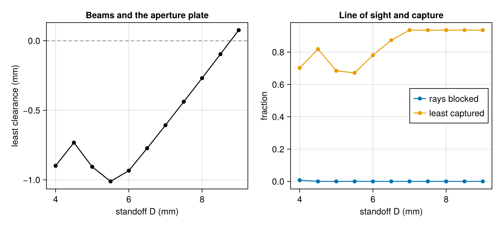

Backlighter placement sweep
An x-ray radiograph needs a backlighter: a foil heated by a few laser beams, placed behind the object on the diagnostic's line of sight, whose x rays cross the object to the detector. Where the foil goes is a trade. Close to the object, the foil subtends a wide cone, and the x-ray bundle from it can clip hardware near the line of sight; the beams that heat it also pass closer to that hardware. Far from it, the foil's emission spreads over a larger solid angle before it reaches the object.
This tutorial designs the pointing of an OMEGA-style backlighter in the foil's own coordinates, then moves the foil along the line of sight with its beams following and checks every step for beam clearance, an unobstructed line of sight and the power the foil captures. It introduces frames (Frame, foil_frame), pointing parameterized in a frame (FramePointing) and placement sweeps (placement_sweep).
The target is a mock-up with generic dimensions, not a fielded design: a 2 mm square gold foil, a 0.43 mm radius plastic sphere at target-chamber center (TCC) as the object, and between them an aperture plate, a gold washer whose bore limits what the detector sees of the foil's surroundings.
using Briareus
using CairoMakie
using LinearAlgebra
using Printf
CairoMakie.activate!(type = "png", px_per_unit = 2)The foil and its frame
The line of sight runs from TCC toward the detector at polar angle 90° and azimuth 0°, in the frame of omega_ports. backlighter_foil places the foil on the far side, a standoff $D$ from TCC, facing the detector. The same placement as a frame, foil_frame, has its origin at the foil's center, its $x$ and $y$ axes along the foil's edges and its $z$ axis along the front normal, toward the detector. Local coordinates $(u, v, 0)$ are points on the foil's face.
los = (90.0, 0.0)
D0 = 8.0 # standoff of the design (mm)
foil_edge = 2.0
F = foil_frame(los; standoff = D0)
foil_part = backlighter_foil(los; standoff = D0, width = foil_edge, n = 8)
FFrame(origin (-8, 0, 0), x (6.123e-17, 0, -1), y (0, 1, 0), z (1, 0, 0))The aperture plate sits 2.5 mm from TCC toward the foil, normal to the line of sight, with a 1.0 mm bore radius and a 1.5 mm outer radius. Its frame is the line of sight's port_frame moved to that point, so the plate's mesh, built about the $z$ axis, lands across the line of sight.
d = port_vector(los...)
X0, bore, outer = 2.5, 1.0, 1.2
P = port_frame(los...; origin = -X0 .* d)
washer = Component(:washer, transform(annulus_mesh(bore, outer, 0.0; nr = 2, nphi = 64), P.R, P.origin),
gold(); two_sided = true)
capsule = Component(:capsule, sphere_mesh(0.43; ntheta = 12, nphi = 24), ablator())
target = Target([foil_part, washer, capsule])Target with 3 components, 672 elements, 912 triangles
backlighter surface Au 128 elements area 4.0000 mm² (two-sided)
washer surface Au 256 elements area 1.3801 mm² (two-sided)
capsule surface ablator 288 elements area 2.2841 mm²
Beams pointed in the foil's frame
The beams come from the ports on the detector's side, 20° to 40° from the line of sight: three symmetric pairs, at 25.0°, 33.2° and 38.5°. Each delivers 0.4 TW in an SG4 phase-plate spot (omega_spot); the powers are illustrative. They start aimed at a ring of radius 0.3 mm on the foil, written in the foil's frame and mapped to the chamber by to_chamber.
beams = [b for b in omega_beams(cones = :all, spot = omega_spot(:SG4), power = 0.4)
if 20 < acosd(dot(b.port, d)) < 40]
ring(i) = (0.3 * cospi(2i / length(beams)), 0.3 * sinpi(2i / length(beams)), 0.0)
beams = [remake(b; aim = to_chamber(F, ring(i))) for (i, b) in enumerate(beams)]
[(b.name, round(acosd(dot(b.port, d)); digits = 1)) for b in beams]6-element Vector{Tuple{String, Float64}}:
("B11", 38.5)
("B20", 38.5)
("B31", 25.0)
("B40", 25.0)
("B41", 33.2)
("B50", 33.2)A FramePointing makes each beam's aim a pair of parameters $(u, v)$ in the foil's frame. Every beam is its own group (by = :beam), so there are twelve parameters, and each maps to the chamber as $R\,(u, v, 0) + o$: the parameters keep their meaning wherever the foil goes.
pointing = FramePointing(beams, F; by = :beam, fields = (:u, :v))
scenario = Scenario(target, pointing)Scenario(672 elements, 6 beams, 12 parameters, 0 observed elements)The objective is the uniformity of the absorbed flux over the foil's front, the squared rms nonuniformity, plus the squared fraction of the beams' power that misses it. It refers to the foil's elements only, not to chamber positions, so it serves at any placement.
function foil_objective(ev)
t = ev.scenario.target
front = [e for e in elements(t, :backlighter) if t.elem_side[e] == 1]
absorbed = ev.deposition.element[front]
area = t.elem_area[front]
return rms_nonuniformity(absorbed ./ area, area)^2 +
(1 - sum(absorbed) / ev.deposition.delivered)^2
end
result = optimize_pointing(scenario, foil_objective; iterations = 100)Pointing optimization converged: objective 2.088 → 0.1955
28 iterations, 34 evaluations, 12 parameters, none at a boundThe optimizer spreads the spots across the face, each within the default ±1 mm box about its start:
for (name, u, v) in zip(beams, result.x[1:2:end], result.x[2:2:end])
@printf("%s u = %+.3f mm v = %+.3f mm\n", name.name, u, v)
end
designed = FramePointing(result.beams, F; by = :beam, fields = (:u, :v))FramePointing{String}(Beam{Float64}[Beam(B11, θ=58.85°, φ=23.94°, 0.4 TW, aim=(-8, 0.6231, -0.5553), defocus=0 mm), Beam(B20, θ=58.85°, φ=336.06°, 0.4 TW, aim=(-8, 0.6245, 0.5058), defocus=0 mm), Beam(B31, θ=98.75°, φ=23.46°, 0.4 TW, aim=(-8, -0.1958, 0.6834), defocus=0 mm), Beam(B40, θ=98.75°, φ=336.54°, 0.4 TW, aim=(-8, -0.6877, 0.1545), defocus=0 mm), Beam(B41, θ=121.15°, φ=12.06°, 0.4 TW, aim=(-8, -0.5899, -0.6429), defocus=0 mm), Beam(B50, θ=121.15°, φ=347.94°, 0.4 TW, aim=(-8, 0.05307, -0.1559), defocus=0 mm)], ["B11", "B20", "B31", "B40", "B41", "B50"], [[1], [2], [3], [4], [5], [6]], [:u, :v], false, Frame[Frame(origin (-8, 0, 0), x (6.123e-17, 0, -1), y (0, 1, 0), z (1, 0, 0)), Frame(origin (-8, 0, 0), x (6.123e-17, 0, -1), y (0, 1, 0), z (1, 0, 0)), Frame(origin (-8, 0, 0), x (6.123e-17, 0, -1), y (0, 1, 0), z (1, 0, 0)), Frame(origin (-8, 0, 0), x (6.123e-17, 0, -1), y (0, 1, 0), z (1, 0, 0)), Frame(origin (-8, 0, 0), x (6.123e-17, 0, -1), y (0, 1, 0), z (1, 0, 0)), Frame(origin (-8, 0, 0), x (6.123e-17, 0, -1), y (0, 1, 0), z (1, 0, 0))], StaticArraysCore.SVector{3, Float64}[[0.55530720827297, 0.6231052474457532, 0.0], [-0.5058294331751676, 0.6244821697791291, 0.0], [-0.6834035503372603, -0.19580616071898355, 0.0], [-0.15445380272587672, -0.6876812831109016, 0.0], [0.6428502512435396, -0.5899250419906714, 0.0], [0.15593492954810986, 0.05307401993342166, 0.0]], ["B11", "B20", "B31", "B40", "B41", "B50"])Sweeping the standoff
placement_sweep moves the foil along its frame's $z$ axis, toward TCC for a positive shift, with every beam following (follow = true): each step translates the foil and the beams' aims by the same vector, rebuilds the target and runs the checks. Here they are the beam clearance of clearance to every part but the foil (with its quick settings and without the NIF clearance wings, which are engineering defaults for NIF), the line_of_sight check through the sphere's disk, and the fraction of each beam's power the foil absorbs. Standoffs run from 4 to 9 mm.
standoffs = 4.0:0.5:9.0
checks = (; clearance_kw = (; targets = (:backlighter,), wings = (), nangles = 8, nspot = 31),
los, los_kw = (; object = :capsule, radius = 0.43),
capture = :backlighter, capture_kw = (; resolution = 0.6))
sweep = placement_sweep(target, designed, :backlighter, D0 .- standoffs; frame = F, axis = :z,
follow = true, checks...)SweepResult: 11 of 11 steps
value clearance mm worst beam / part fail review LOS blocked covered captured objective
+4 -0.8990 B50 / washer 6 0 blocked 0.0073 1.0000 0.70202 –
+3.5 -0.7324 B50 / washer 6 0 clear 0.0000 1.0000 0.81816 –
+3 -0.9065 B31 / washer 4 2 clear 0.0000 1.0000 0.68413 –
+2.5 -1.0114 B31 / washer 3 0 clear 0.0000 1.0000 0.67139 –
+2 -0.9339 B31 / washer 1 1 clear 0.0000 1.0000 0.78081 –
+1.5 -0.7731 B31 / washer 1 0 clear 0.0000 1.0000 0.87349 –
+1 -0.6074 B31 / washer 1 0 clear 0.0000 1.0000 0.93572 –
+0.5 -0.4383 B31 / washer 1 0 clear 0.0000 1.0000 0.93572 –
+0 -0.2687 B31 / washer 0 1 clear 0.0000 1.0000 0.93572 –
-0.5 -0.0963 B31 / washer 0 1 clear 0.0000 1.0000 0.93572 –
-1 +0.0763 B31 / washer 0 0 clear 0.0000 1.0000 0.93572 –The rows list, for each shift $D_0 - D$, the least worst-case clearance between a beam's envelope and the hardware (negative: the envelope overlaps it under the error set), the beam and part it belongs to, the failing and review pairs, the line of sight, and the least captured fraction:
sweepSweepResult: 11 of 11 steps
value clearance mm worst beam / part fail review LOS blocked covered captured objective
+4 -0.8990 B50 / washer 6 0 blocked 0.0073 1.0000 0.70202 –
+3.5 -0.7324 B50 / washer 6 0 clear 0.0000 1.0000 0.81816 –
+3 -0.9065 B31 / washer 4 2 clear 0.0000 1.0000 0.68413 –
+2.5 -1.0114 B31 / washer 3 0 clear 0.0000 1.0000 0.67139 –
+2 -0.9339 B31 / washer 1 1 clear 0.0000 1.0000 0.78081 –
+1.5 -0.7731 B31 / washer 1 0 clear 0.0000 1.0000 0.87349 –
+1 -0.6074 B31 / washer 1 0 clear 0.0000 1.0000 0.93572 –
+0.5 -0.4383 B31 / washer 1 0 clear 0.0000 1.0000 0.93572 –
+0 -0.2687 B31 / washer 0 1 clear 0.0000 1.0000 0.93572 –
-0.5 -0.0963 B31 / washer 0 1 clear 0.0000 1.0000 0.93572 –
-1 +0.0763 B31 / washer 0 0 clear 0.0000 1.0000 0.93572 –Two limits appear. At 4 mm the line of sight is blocked: the x-ray bundle from the foil's corners widens past the aperture plate's bore. The beams set the tighter limit. A beam's axis crosses the plate's plane about $(D - X_0) \tan\alpha$ from the line of sight, $\alpha$ the angle of its port from it, shifted by its aim on the foil; a 25° beam aimed 0.68 mm off the foil's center (B31) passes closest, and its worst-case envelope clears the plate only beyond about 8.8 mm. At the design standoff of 8 mm it still overlaps under the error set (a review pair: some light of its displaced envelope reaches the plate). The captured fraction stays the same from 7 to 9 mm, where the nominal beams miss the plate, since the foil and its beams move as one; closer in, the plate takes part of the light.
fig = Figure(size = (800, 360))
ax1 = Axis(fig[1, 1], xlabel = "standoff D (mm)", ylabel = "least clearance (mm)",
title = "Beams and the aperture plate")
clear = [r.min_clearance for r in sweep.rows]
hlines!(ax1, [0.0], color = :gray60, linestyle = :dash)
scatterlines!(ax1, collect(standoffs), clear, color = :black)
ax2 = Axis(fig[1, 2], xlabel = "standoff D (mm)", ylabel = "fraction",
title = "Line of sight and capture")
scatterlines!(ax2, collect(standoffs), [r.blocked_fraction for r in sweep.rows],
label = "rays blocked")
scatterlines!(ax2, collect(standoffs), [r.min_captured for r in sweep.rows],
label = "least captured")
axislegend(ax2, position = :rc)
fig
The rows can be written for a spreadsheet with write_sweep_csv. placement_sweep also re-optimizes the pointing at each step when given an optimize named tuple, starting from the previous step's optimum; with the beams following the foil rigidly, as here, the design does not change, so that is left off.
The line-of-sight threshold
The sweep's steps bracket the standoff where the line of sight opens; its exact value follows from similar triangles. The widest ray of the bundle runs from a corner of the foil, at $w\sqrt{2}$ from the line of sight ($w$ the half-width), through the opposite rim of the object's disk of radius $a$. At the aperture plate, a fraction $s = X_0/D$ of the way from the disk to the foil, it lies $(1 - s)\,a + s\,w\sqrt{2}$ from the axis, and it reaches the bore's rim $\rho$ at
\[D^* = X_0\,\frac{w\sqrt{2} - a}{\rho - a}.\]
w, a = foil_edge / 2, 0.43
Dstar = X0 * (w * sqrt(2) - a) / (bore - a)
edge = placement_sweep(target, designed, :backlighter, D0 .- [Dstar + 1e-6, Dstar - 1e-6];
frame = F, axis = :z, follow = true, los, los_kw = checks.los_kw)
@printf("D* = %.6f mm: %s just outside, %s just inside\n", Dstar,
edge.rows[1].los_clear ? "clear" : "blocked", edge.rows[2].los_clear ? "clear" : "blocked")D* = 4.316726 mm: clear just outside, blocked just insideThe followed aims move by exactly the shift along the foil's normal:
shifts = [maximum(norm(b.aim - (c.aim + r.value * F.R[:, 3])) for (b, c) in zip(r.beams, result.beams))
for r in sweep.rows]
@printf("largest aim error over the sweep: %.1e mm\n", maximum(shifts))largest aim error over the sweep: 0.0e+00 mmWhat this checks
- The line of sight opens at the similar-triangles standoff $D^*$: the check through the sphere's disk is clear a nanometer outside it and blocked a nanometer inside, because the bundle's extreme ray (a foil corner through the disk's rim, both sampled) meets a vertex of the bore's polygon.
- The followed beams' aims equal the optimized aims plus the shift along the foil's normal at every step, exactly.
- The captured fraction is the same, to the five digits shown, at every step where the nominal beams miss the aperture plate, since the foil and its beams translate together.
This page was generated using Literate.jl.